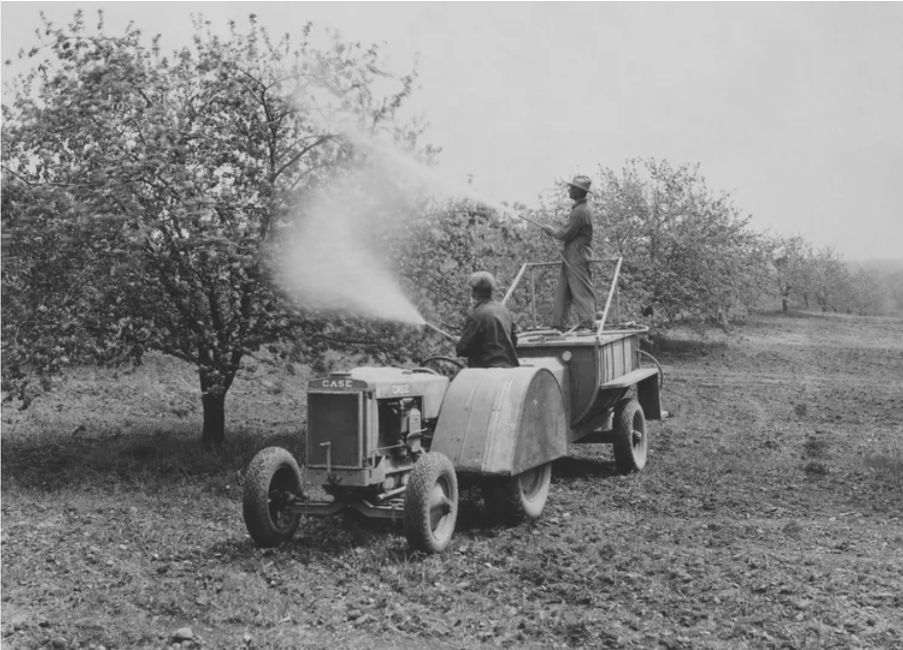
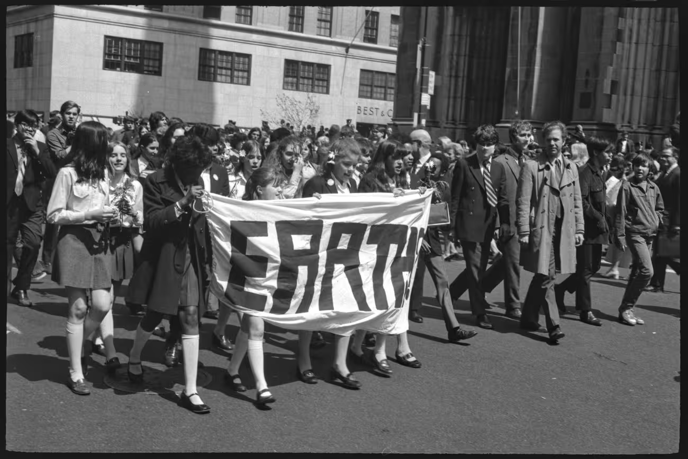
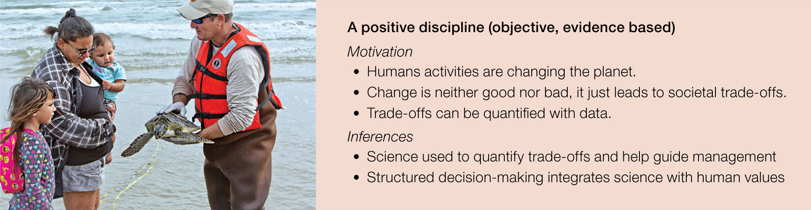

2.2 Contemporary Conservation Biology
Conservation Biology
Historic Context
Timeline Part 1
Timeline Part 2
London’s Great Smog (1952)

- Airborn nitrogen oxides, sulfur dioxide, and soot from coal burning
- Cold weather + windless conditions
. . .
Result: a blanket of smog covered London for five days
- Thousands died and 100,000 fell ill
- Cold weather combined with windless conditions allowed airborne nitrogen oxides, sulfur dioxide, and soot from coal burning to form a thick layer of smog over the city.
- Recent research has shown that 12,000 premature deaths can be partially attributed to this smog.
Love Canal (1953)
Hooker Chemical Company began dumping industrial waste into the Love Canal near Niagara Falls, NY in the 1940s.
- Love Canal residents reported strange odors and blue goo bubbling into their basements.
- High rates of asthma, miscarriages, mental disabilities, and other health problems brought Love Canal into the spotlight in 1978

. . .
56% of children born there between 1974 and 1978 had birth defects.
- After the site was later sold and developed, Love Canal residents reported strange odors and blue goo bubbling into their basements.
- High rates of asthma, miscarriages, mental disabilities, and other health problems brought Love Canal into the spotlight in 1978, and subsequent surveys found that 56% of children born there between 1974 and 1978 had birth defects.
- New York State Health Commissioner David Axelrod called the incident a “national symbol of a failure to exercise a sense of concern for future generations.” The U.S. government soon after passed the Superfund law.
Love Canal (1953)
Silent Spring (1962)
After WWII, DDT was promoted as a wonder chemical

- Rachel Carson published Silent Spring in 1962
- highlighted the dangers & consequences of DDT
- testified before U.S. Congress
. . .
The U.S. Environmental Protection Agency was founded and subsequently banned the use of DDT
- Carson’s book, and testimony before the U.S. Congress, helped trigger the establishment of the U.S. Environmental Protection Agency, which subsequently banned the use of DDT.
Silent Spring (1962)
Cuyahoga River (1969)
Industrial waste poured into Cleveland’s Cuyahoga River over decades
. . .
The river repeatedly caught fire over several years.
. . .

. . .
In 1969 the photo above made it to the front page of Time Magazine and catalyzed a nationwide movement
Cuyahoga River (1969)
Earth Day (1970)
The first official Earth Day (April 22, 1970) marks a turning point in Environmental awareness and activism, particularly in the US, Canada, and Europe.

. . .
This also correlates with the emergence of Conservation Biology as a scientific discipline.
- Ecologist Michael Soulé organized the First International Conference on Research in Conservation Biology in 1978
Earth Day (1970)
Foundational Concept & Theory
An Interdisciplinary Field

- Soulé proposed a new interdisciplinary approach that could help save plants and animals from the threat of human-caused extinctions.
- Though founded in the disciplines of biological sciences and natural resource management, conservation has expanded to include the social sciences, humanities, physical sciences, and engineering.
Views of Conservation

- Soulé argued that conservation biology was more than just environmentalism, in which decision-making was based largely on philosophical, religious, and ethical arguments
Views of Conservation

- Soulé argued that conservation biology was a form of normative science
- Soulé went on to outline what he called the functional and normative postulates that, in his view, represent the core principles and values of the field
Views of Conservation

- People are motivated to conserve biodiversity for a large variety of reasons
- some of which are based on normative viewpoints and others of which are based on positive viewpoints.
- While one type of motivation is sometimes emphasized over the other, rarely do we treat those motivations as if they are mutually exclusive in any real act of decision-making.
- Complementary, because different people respond to different value systems.
A Crisis Discipline
Practitioners must take action even in the absence of complete information, because waiting to collect the necessary data may result in irreversible loss.
- Soulé argued that conservation biology differs from most other biological sciences in that it is a crisis discipline
- Conservation biologists are often asked for advice and input by government and private agencies.
- Therefore, the “expert” is expected to provide quick, unambiguous answers even in the absence of complete knowledge.
- This is a major challenge for conservation biologists, who must walk a fine line between scientific credibility and taking action and providing advice based on general and perhaps incomplete knowledge
Views of Conservation

- People are motivated to conserve biodiversity for a large variety of reasons
- some of which are based on normative viewpoints and others of which are based on positive viewpoints.
- While one type of motivation is sometimes emphasized over the other, rarely do we treat those motivations as if they are mutually exclusive in any real act of decision-making.
- Complementary, because different people respond to different value systems.